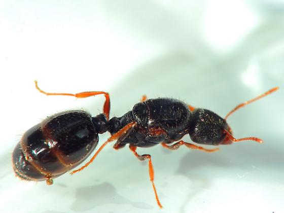
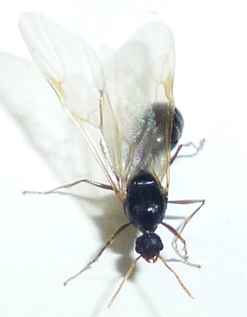
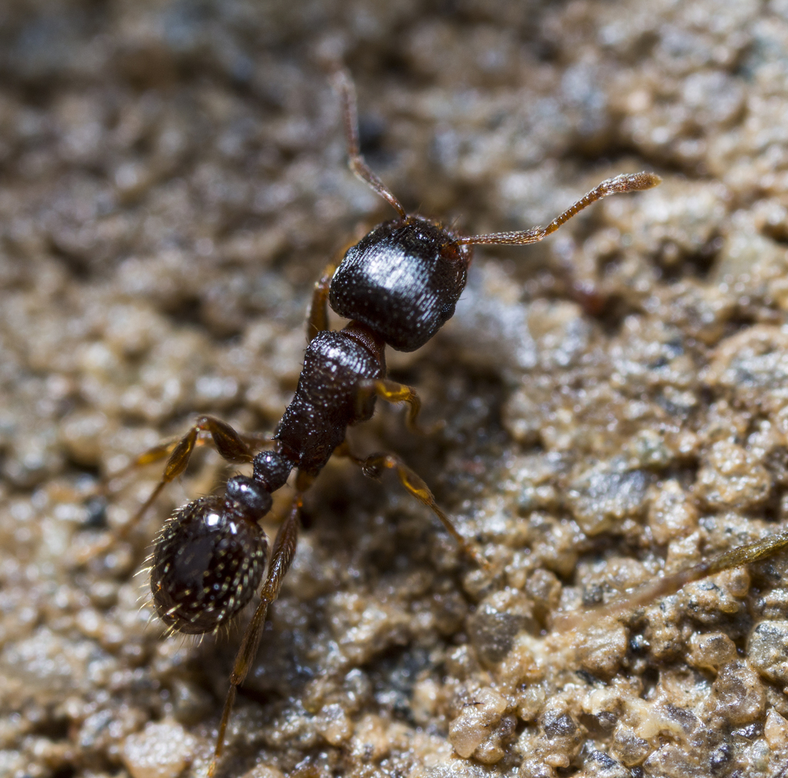
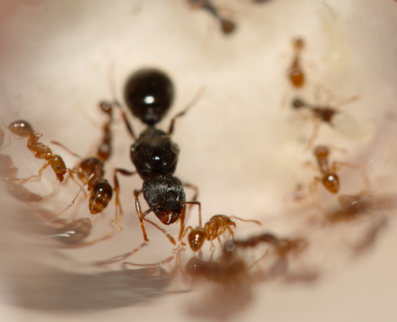
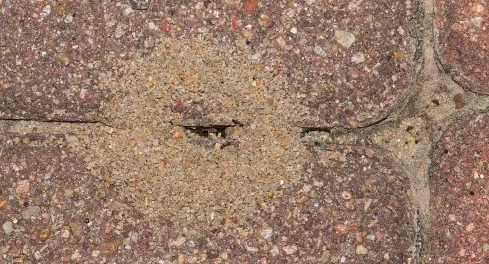

Tetramorium immigrans-Pavement Ant
Species overview:
Tetramorium immigrans or the Pavement Ant is a small species native to Europe. Tetramorium immigrans is invasive to the United States and many other countries around the world. They commonly nest on the side of concrete or in grass. They build small mounds at there nest enterence.
Good to know:
Here is some good to know info about the species!
Scientific name and common name:
Tetramorium immigrans-Pavement Ant
Native or invasive to Utah:
Tetramorium immigrans is invasive
Are they Polygynous:
Tetramorium immigrans is not
Do the larva spin cocoons or stay naked:
Tetramorium immigrans larva stay naked
Are they claustral or semi-claustral:
Tetramorium immigrans is fully claustral
Nest Behavior:
Tetramorium immigrans is very common along streets and sidewalks. They tend to nest in soil and under rocks. they create small mounds of soil at there nest entrance typically 1-2 inches tall.
What do they eat:
Tetramorium immigrans is a generalist species, being willing to eat almost anything. They drink nectar from flowers as a sugar source. They love dead insects as a protein source. They sometimes will eat seeds if given the chance.
Founding time and behavior:
Tetramorium immigrans flies in July and sometimes August. After queens mate with a male they break off there wings and begin to look for a place to dig there claustral chamber. Often multiple queens will found a colony together with there sometimes being over ten together. If this happens the first workers will kill off every queen but one. Queens can lay over 20 eggs in there first batch and continue to lay a few eggs every week until the first workers arrive. The development from egg to worker takes around 3-6 weeks on average and queens tend to have 3-10 first workers. Tetramorium immigrans does not have majors or repletes. Colonies can get populations of 1000 workers in the first year and 7000-10000 once mature. Once colonies reach maturity around 3-4 years old the queen will produce alates in the spring. When colonies identify a food source they form huge trails from there nest entrance to the food source. Tetramorium immigrans colonies are very territorial and often battle other colonies in the area in clumps of workers. Tetramorium immigrans queens tend to live for 7-10 years in the wild.

A Tetramorium immigrans queen:

A Tetramorium immigrans male alate:

A Tetramorium immigrans worker:

A young Tetramorium immigrans colony:

A Tetramorium immigrans nest entrance: